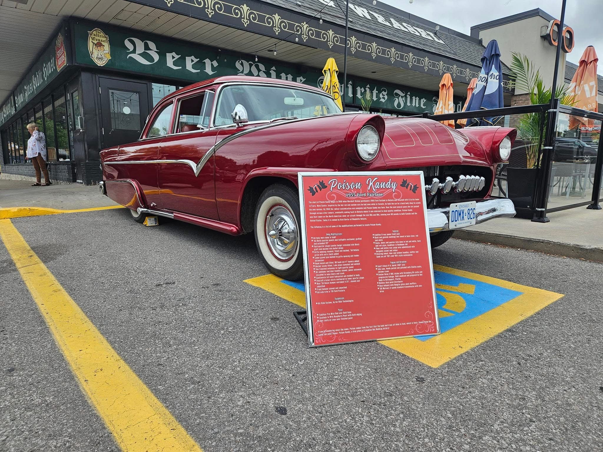
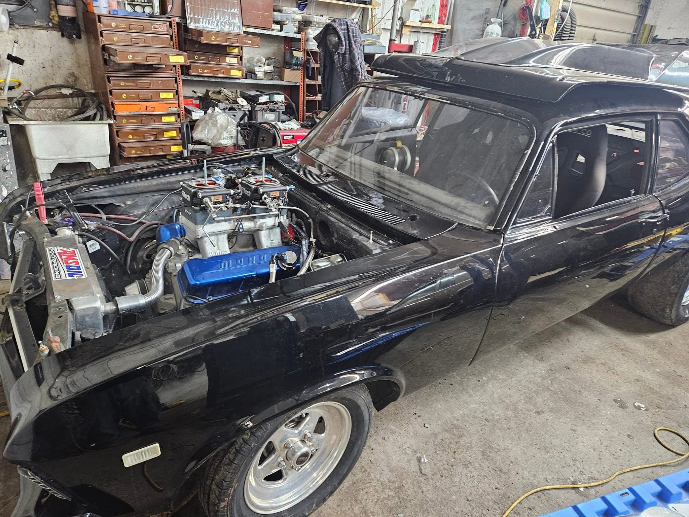
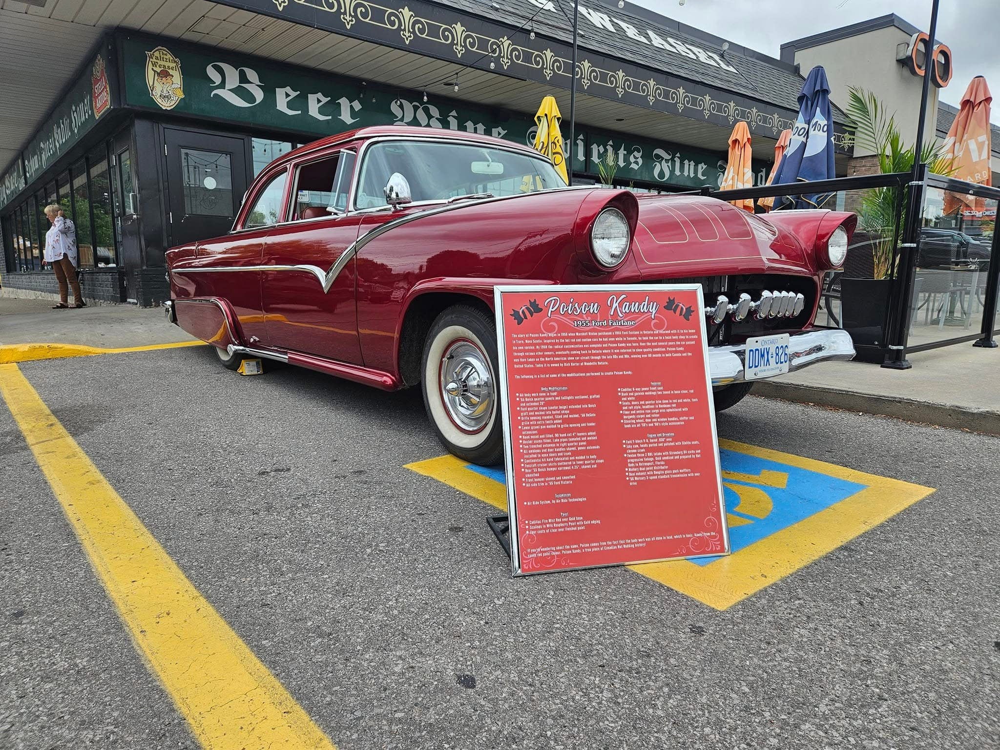
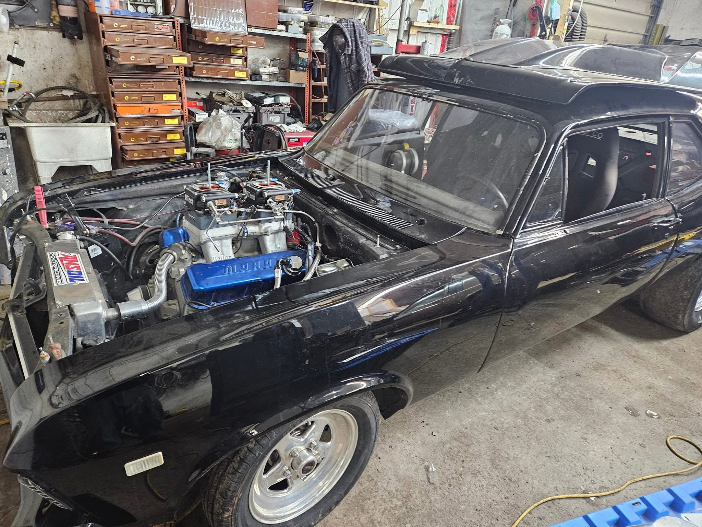
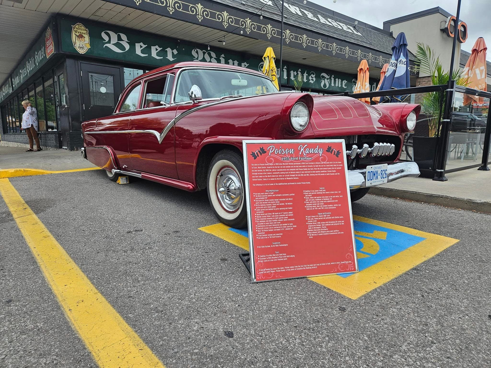
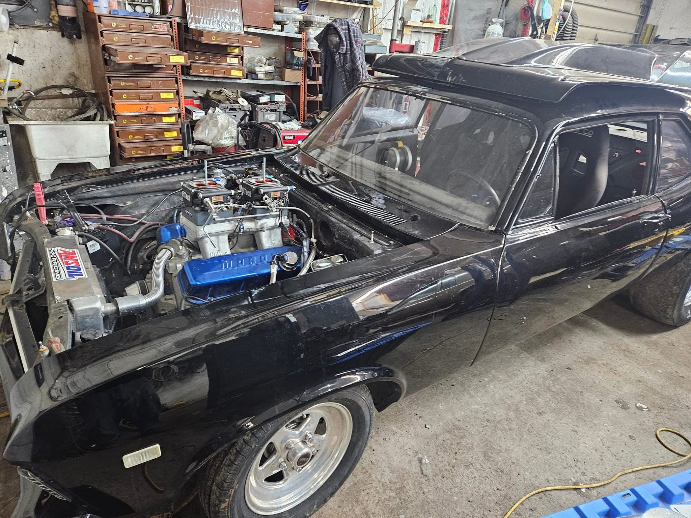

Gallery
 



At Twisted Classics, we bring timeless automobiles back to life. From restoring vintage beauties to repairing modern cars, we’re your trusted partner for all things automotive.
Our expertise in classic car restoration is matched only by our commitment to quality. Whether it’s a rare gem or a modern vehicle in need of repair, Twisted Classics delivers exceptional results every time.
Twisted Classics was founded out of a passion for preserving the legacy of classic cars while providing top-notch services for modern vehicles. With decades of combined experience, our team of automotive experts specializes in everything from meticulous restorations to routine maintenance.
We believe every car has a story to tell, and it’s our mission to keep that story alive with precision, dedication, and craftsmanship.


Ready to give your car the care it deserves? Get in touch with us today!